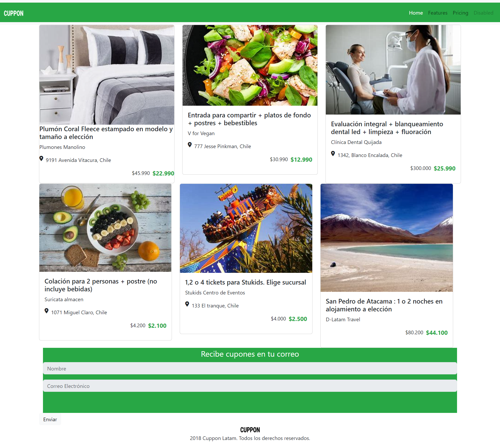

Experiencia
Ministerio de Obras Públicas
Práctica Profesional realizada en el Ministerio de Obras Públicas en el área de Tesorería, Departamento de Contabilidad y Finanzas.
Sitrans
Práctica básica realizada en el extraportuario Sitrans, en la comuna de San Antonio, en el área de Logística de la empresa.

Ayudantías - Finanzas
Ayudante de Finanzas en la Universidad Federico Santa María por 3 semestres.
Portafolio
Trabajos realizados durante el curso de Desarollo Web
Introducción a HTML
Introducción a CSS
Alineando contenido con Flex
